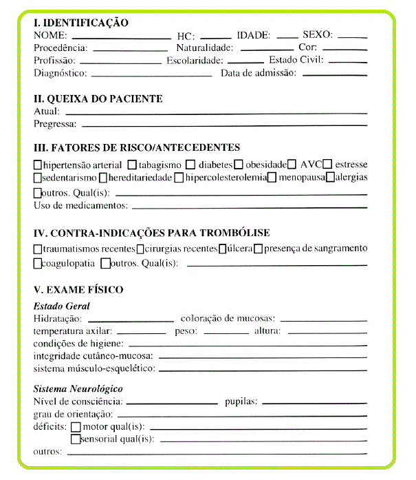
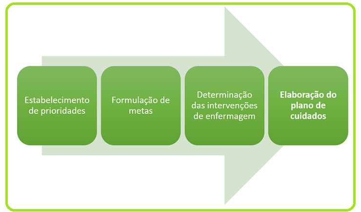
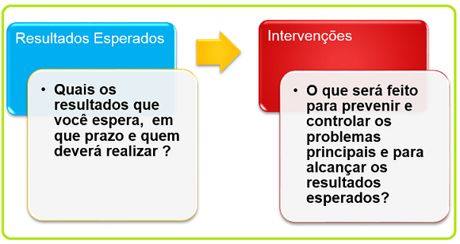
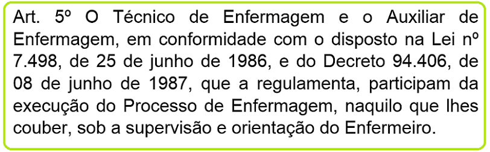
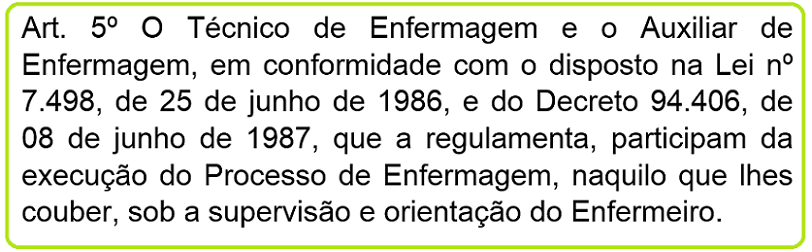
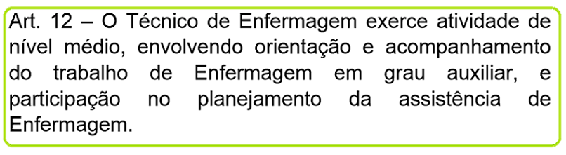

Quais são as etapas componentes do Processo de Enfermagem?
E como técnico de enfermagem deve participar?
O Processo de Enfermagem (PE) é um instrumento metodológico que orienta o cuidado profissional de Enfermagem e a documentação da prática profissional.
Trata-se, portanto, de um dos mecanismos de operacionalização da SAE!
Confira um resumo das principais propriedades do PE:
Logo, o PE é um instrumento que possibilita à equipe de enfermagem identificar, compreender, descrever, explicar e predizer os problemas de saúde do paciente, assim como determinar quais aspectos dessas respostas exigem intervenção profissional, para alcançar resultados esperados.
Todas as áreas de atuação profissional têm buscado construir um conjunto de conhecimento próprio, seguindo um método de trabalho.
Na enfermagem, a metodologia utilizada na organização e implementação do cuidado denomina-se PE.
É valido perceber a diferença entre o PE e o processo de atuação da equipe médica:
A enfermagem, assim, foca seu processo de trabalho nos cuidados e o PE constitui um mecanismo sistemático de pensar como intervir nos problemas identificados.
Não se trata de algo diferente do que a equipe de enfermagem já realiza em seus ambientes de trabalho, mas sim num mecanismo de organizar as ações de enfermagem, sistematizando-as com base em uma linguagem comum, com o objetivo maior de individualizar os cuidados de enfermagem, de modo a garantir uma atenção/assistência eficiente.
Veja um exemplo comum de algo que a enfermagem lida diariamente e sua relação com as etapas do PE:

É evidente que a divisão do PE em etapas cumpre a função meramente didática, haja vista que o PE é todo integrado, com as suas etapas interdependentes e inter-relacionadas.
Vamos, então, conhecer um pouco em que consiste cada etapa do PE e, depois, refletiremos sobre em quais etapas o técnico de enfermagem pode se envolver...
Etapa 1: Histórico de Enfermagem
Esta etapa envolve o levantamento de dados sobre o indivíduo, família e/ou comunidade. Basicamente é a entrevista e o exame físico!
A equipe de enfermagem no Histórico de Enfermagem procura por evidências de:
É o primeiro passo do PE, dele depende o sucesso de todo o plano de cuidados. É o momento de perguntar, questionar, colher dados e realizar o exame físico.
Nesse processo de coleta de dados é importante:
Para facilitar a coleta de dados, podem ser utilizados instrumentos impressos ou eletrônicos para o registro do histórico de enfermagem. Veja um exemplo:
Fonte:http://www.scielo.br/img/revistas/rlae/v4n2/a12anexo1pt1.gif
{kind=link}
Confira mais informações sobre esta importante etapa do PE nos artigos disponibilizados no item “Para saber mais: dicas de leitura”.
Etapa 2: Diagnóstico de Enfermagem
Trata-se de uma etapa dinâmica, sistemática e complexa. Não é apenas uma simples listagem de problemas, envolve raciocínio clínico e julgamento diagnóstico. Portanto, tem sido descrito como um processo.
São finalidades do Diagnóstico de Enfermagem:
- orientar a assistência de enfermagem a partir de diagnósticos específicos da profissão;
- uniformizar e universalizar a terminologia usada para se referir a problemas do cliente pelos quais a enfermagem tem responsabilidade profissional;
- servir como veículo de mudança e transformação da prática;
- facilitar a informatização;
- criar um corpo de conhecimentos/área de domínio da enfermagem;
- orientar o ensino e a pesquisa;e
- melhorar a qualidade da assistência.
É válido que perceba, mais uma vez, a diferença fundamental entre o foco dos Diagnósticos de Enfermagem e dos Diagnósticos Médicos:
Esta etapa constitui uma incumbência privativa do enfermeiro. Com o fim de unificar a linguagem utilizada, os Diagnósticos de Enfermagem (e as próximas duas etapas do PE que estudaremos) devem ser realizados a partir de sistemas de classificação padronizados internacionalmente. Confira informações sobre os sistemas mais difundidos:
Confira um vídeo didático para entender um pouco mais sobre a elaboração de um Diagnóstico de Enfermagem:
Etapa 3: Planejamento de Enfermagem
Estabelecidos os Diagnósticos de Enfermagem, a fase de Planejamento envolve quatro componentes fundamentais:
Logo, o Planejamento de Enfermagem tem como finalidades:
- promover a comunicação entre os cuidadores;
- direcionar o cuidado e a documentação;
- criar um registro capaz de ser usado mais tarde para avaliação, pesquisa e defesa legal; e
- proporcionar instruções para que a equipe de enfermagem possa prestar cuidados ao paciente.
Para traçar o plano de cuidados – etapa também privativa do enfermeiro – deve-se pensar, então, nos resultados que se espera alcançar e, assim, nas intervenções necessárias para que isso aconteça. Logo, o enfermeiro deve-se fazer questões primordiais:
Desse modo, o Planejamento de Enfermagem é traçado e isto deve ser documentado para que toda a equipe de enfermagem tenha acesso e garanta continuidade da assistência sistematizada.
A terminologia a ser utilizada dependerá do sistema de classificação adotado (NANDA ou CIPE, por exemplo) e o impresso utilizado também será influenciado por cada ambiente de cuidado, mas segue um exemplo didático apenas para melhor visualização do que se espera com essa etapa do PE:

Confira no vídeo algumas informações adicionais sobre a elaboração das Intervenções de Enfermagem:
Etapa 4: Implementação de Enfermagem
Esta etapa constitui na operacionalização de tudo o que foi planejado até então.
Histórico coletado, diagnósticos traçados e plano de cuidado definido, é hora de colocar as intervenções em prática, algo que necessitará da colaboração e compreensão de todos os membros da equipe de enfermagem!
Etapa 5: Avaliação de Enfermagem
É o processo que determina se as metas, ou seja, os resultados, foram alcançados, e é realizado por meio da análise das respostas do cliente ao plano de cuidados.

Não se trata de uma etapa fim, mas algo que deve ser constantemente avaliado.
É o momento de analisar o planejamento traçado, acompanhar a evolução dos diagnósticos estabelecidos e, assim, a assistência de enfermagem é executada sob princípios científicos sólidos, de modo a garantir os benefícios potenciais da SAE!
É válido destacar, nesse processo, que algo fundamental em todas as etapas do PE é o registro de enfermagem.
Sabe-se que o prontuário é a documentação legal permanente das informações relevantes para o gerenciamento do cuidado de saúde de um paciente.
Contém registros de observações e condutas assistenciais realizadas por todos os profissionais, de modo a permitir uma visão do estado geral do paciente e favorecer a continuidade e qualidade da atenção à saúde.
Nesse sentido, a organização e a efetivação dos registros trazem inúmeros benefícios:
No âmbito dos registros de enfermagem, é importante destacar a diferença entre a anotação de enfermagem e a evolução de enfermagem. Confira no vídeo e no esquema resumo!

Compreendidas as etapas do PE, vamos refletir sobre a questão: em quais momentos o técnico de enfermagem pode participar?
Vamos relembrar o que nos diz a Resolução nº 358 do COFEN:
 

Logo, fica claro que traçar os diagnósticos e o plano de cuidados são atividades privativas do enfermeiro. Todavia, é importante lembrar o que nos diz a Lei do Exercício Profissional da Enfermagem brasileira:
Fica claro, então, que a SAE e, em específico, o PE, necessita do trabalho sistemático de toda a equipe de enfermagem!


Que tal refletir um pouco sobre como os membros da equipe de enfermagem podem participar da SAE?
A proposta é que você construa um mapa conceitual que destaque o seu aprendizado sobre esses elementos.
Sugerimos o uso do software gratuito CmapTools e a consulta a este texto didático que pode auxiliá-lo nesse processo:
Mapas ConceituaisBom aprendizado!